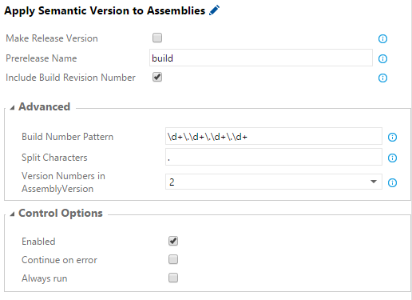

For some time now, Community TFS Build Extensions has provided a PowerShell script for automatic versioning of assemblies during a build. This simple script served me well, until I heard about semantic versioning… To make a long story short, semantic versioning is a standard way to reason about version numbering.
There are quite a few version patterns that are in use, where Major.Minor.Patch.Build is a common one. This is however not a valid format according to the semantic versioning specification, although I suspect that many relates to that pattern when they talk about versioning.
The version patterns that NuGet supports are both Major.Minor.Patch and Major.Minor.Patch-Prerelease, see the versioning documentation of NuGet for more details.
Up until now I have struggled with setting prerelease versions for NuGet packages automatically during a build. My problem with the standard .Net assembly version, which was the version that I used to focus on, is that it does not support the prerelease pattern. Because of this, I used to include the NuGet package version either directly in the nuspec-file or as an input parameter for the build.
A couple of days ago I once again found myself in need of publishing a series of prerelease NuGet packages, and this time I found a way to make the versioning happen automatically. I discovered that .Net supports not only one, but three version types. I also found out how easy it is to create custom tools for the new build workflow in Visual Studio Team Services (VSTS) (Formerly Visual Studio Online) and TFS 2015.
Customizing the Build To Version Assemblies
VSTS and TFS 2015 bring a new build workflow with a set of predefined tools organized into build steps. Needless to say, although that these tools are great they do not cover all your customization scenarios of your build- or release flow. Invoking PowerShell scripts is often an appealing option for this kind of customization. Using PowerShell scripts is especially a good idea when you are making changes that are unique for your solution. Just write your script and invoke it!
Working with builds that directly invokes PowerShell scripts has its limitations:
- If you have to deal with multiple arguments it is easy to get one of them wrong.
- Often when you update a PowerShell script you will affect its signature, and you might have to manually update its calling command at many places.
- Each build have to include the PowerShell script-files in its source code.
Fortunately, it is relatively straightforward to package your scripts in a task of your own. Once such a task is installed, it can be used by all builds in the entire collection.
How to Create a New Task
I have not found any official documentation on how to create new tasks, but the ones that are included in VSTS/TFS 2015 by default are available as open source from Microsofts GitHub account. A pragmatic approach for your first homebrewed task could be to copy an existing one and customize it to your needs. Just do not forget to generate a new ID!
The minimum task should include task.json, icon.png/svg and any files that need to be invoked. The backend (build agents, which can be installed on both Windows and Linux) can handle running Node-, PowerShell-, and Bash scripts as well as invoking a process directly.
Installation of Tasks
The TFS Cross Platform Command Line utility (tfx-cli) is used to install tasks. It is built on Node.js, so if you have not already got Node.js you have to install it. One way to do that it is to use the Chocolatey command cinst nodejs.
Then, to install a task run the following commands in a Node.js command prompt:
npm install -g tfx-cli- This installs the tfx-cli tool.tfx login- The login is reused throughout the entire session.- Enter collection url >
https://yourname.visualstudio.com/DefaultCollection - Enter personal access token >
2lqewmdba7theldpuoqn7zgs46bmz5c2ppkazlwvk2z2segsgqrq- This is obviously a bogus token… You can add tokens to access your account at https://yourname.visualstudio.com/_details/security/tokens.
- Enter collection url >
tfx build tasks upload c:\path-to-repo\vso-agent-tasks\ApplySemanticVersioningToAssemblies- If you change your mind and do not want a task anymore, you can remove it with
tfx build tasks delete b8df3d76-4ee4-45a9-a659-6ead63b536b4, where the Guid is easiest found in the task.json of your task.
- If you change your mind and do not want a task anymore, you can remove it with
If you make a change to a task that you have previously uploaded, you have to bump its version before you upload it again. The server does not allow overwriting the content of an existing version.
Describing the Apply Semantic Versioning to Assemblies Build Task
The solution to my NuGet package versioning problem was to use the build number to set the versions, and to configure the prerelease name in a build task. To make meaningful semantic versions of all three version types of .Net, they are set to different values. I have published the Apply Semantic Versioning to Assemblies task in my VSO-Agent-Tasks GitHub repository so you can make use of it.
Added as a step in a build, this is how it looks.

The Three Assembly Versions Supported by .Net
The AssemblyVersion is the number that is used by a dll to point out a reference to a specific version of another dll. If this version is changed in a newer dll, those references needs to be updated to target that dll instead. If you follow semantic versioning, the first two version numbers are the ones to increase when the public API changes. Therefore it is a good idea to include just those in the assembly version.
The AssemblyFileVersion is not used by .Net directly, but is instead of value as a historical reference. If you would ever try to figure out from what build a dll has come from, then the assembly file version would help you answer that.
The AssemblyInformationalVersion is something human-readable that describes a version, for example 1.0-RC1. This can theoretically be whatever text you prefer, but in this task it is only configurable to the format 1.2.3-abc0004. Note that the build number is left padded with zeros. The reason for this is that NuGet sorts prerelease versions alphabetically. Semantic versioning supports Major.Minor.Patch-Prerelease.Build, but NuGet does not.
A great thing about the AssemblyInformationalVersion is that NuGet will use that for the package version if it is present. Problem solved!
How Does It Work?
By use of a regular expression, exactly four version numbers (for example 1.2.3.4) are extracted from the build number. All AssemblyInfo.cs files are then iterated and versions are set in the following attributes:
AssemblyVersion- Is set to either 1, 1.2, 1.2.3 or 1.2.3.4 depending on what you enter under “Version Numbers in AssemblyVersion-attribute”. 1.2 is the default.AssemblyFileVersion- Is set to 1.2.3.4. This is not configurable.AssemblyInformationalVersion- Is set to either 1.2.3, 1.2.3-abc or 1.2.3-abc0004 depending on what you enter under “Make Release Version”, “Prerelease Name” and “Include Build Revision Number”.
When one of these attributes are present in the AssemblyInfo.cs-file, their entered version-string is replaced. Attributes which are not present are instead added at the end of the file.
As you well understand, this task must be placed before the build task to make any difference.
Practical Use
The informational version format 1.2.3-abc0004, which is compatible with NuGet, can be used to represent prerelease packages from your nightly builds. For example 2.1.3-build0421 could be the semantic version for 421st build targeting the fourth bugfix of the second API update of the 2.0 release.
When packing a project package and to have NuGet use the informational version number, just set the version tag to <version>$version$</version> in the nuspec-file and you are good to go.
When you are planning to make a new release, you might find that it is a good idea to have the version numbers you intend to have on release fixed and let the build revision number update until you are done. If this is the case, use $(BuildDefinitionName).2.1.3$(Rev:.r) as the Build number format for the build. When you think that you are done, you can simply tick “Make Release Version” and build to make a release version which in this case would be 2.1.3. If you would like to build a release candidate, untick “Include Build Revision Number” and replace the “Prerelease Name” to for example RC1 which would result in 2.1.3-RC1.
Advanced Options
You can change the Build Number Pattern that is used to extract the version numbers from the build number. If you do, then make sure that you enter matching Split Characters and that there would still be exactly four versions present.
Other Tools to Consider
If you are using Git as version control, and do not mind some additional complexity, GitVersion is an excellent tool. It fetch the version from the branch name, branch relations, commit tags and commit messages. This method of finding the version is superior to fetching it from the build number since you do not have to regularly update the build number format as you make releases.
But it forces you to follow a specific branch- and pull request strategy (although I think it’s a good one) in your development process. Not everyone would like to do that.
An other option is to use the versioning capabilities of the built in NuGet Packager task. It contains an option to ?Use Build number to version package? which if checked sets a version to the NuGet package by an argument to the nuget.exe pack command. That version is extracted from the build number in a similar fashion as my Apply Semantic Versioning to Assemblies task does it, but in this case the version is fixed to be in the format Major.Minor.Patch.Build. Using this approach does not version the assemblies, nor does it support semantic versioning.